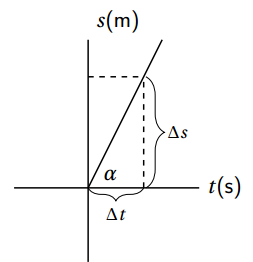
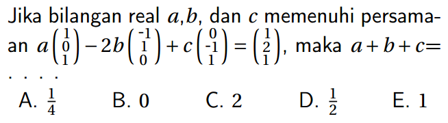
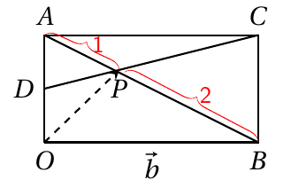
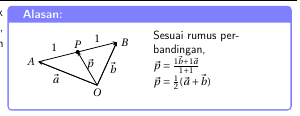

Membuat Kurawal
Untuk membuat kurawal seperti pada gambar berikut

\usetikzlibrary{patterns} % untuk patern
\usetikzlibrary{intersections} % untuk menentukan titik pertemuan
. . . . . . . . . . . . . . . . . . .
\begin{tikzpicture}[scale=0.7]
\draw [-, thick] (-2,0) -- (3,0);
\draw [-,thick] (0,-2) -- (0,4);
\draw [-, thick] (0,0) -- (2,4);
\draw [-, dashed, thick] (1.5,0) -- (1.5,3);
\draw [-, dashed, thick] (0,3) --(1.5,3);
\node at (0.2,0) [above right] {$\alpha$};
\node at (0,4) [above right] {$s \text{(m)}$};
\node at (3,0) [right] {$t \text{(s)}$};
\draw [decorate,decoration={brace,amplitude=10pt,mirror},xshift=-4pt,yshift=0pt]
(1.7,0) -- (1.7,3) node [black,midway,xshift=0.6cm]
{\footnotesize $\Delta s$};
\draw [decorate,decoration={brace,amplitude=7pt,mirror},yshift=0pt]
(0,0) -- (1.5,0) node [midway,yshift=-0.5cm]
{\footnotesize $\Delta t$};
\end{tikzpicture}
2. Membuat Tanda Minus Kecil dan Matriks sebaris

\usepackage{amsmath} % mengandung smallmatrix
\newcommand{\minus}{\scalebox{0.4}[1.0]{$-$}} % membuat tanda minus
\newcommand{\icol}[1]{% inline column vector % membuat icol menggunakan smallmatrix
\left(\begin{smallmatrix}\,#1\,\end{smallmatrix}\right)%
}
.........................................................
\item Jika bilangan real $a$,$b$, dan $c$ memenuhi persamaan $a\icol{1\\0\\1}-2b\icol{\minus1\\1\\0}+c\icol{0\\\minus1\\1}=\icol{1\\2\\1}$, maka $a+b+c$= . . . . \\
\begin{tabularx}{0.47\textwidth}{*{5}{Y}}
A. $\frac{1}{4}$ &
B. $0$ &
C. $2$ &
D. $\frac{1}{2}$ &
E. $1$
\end{tabularx}
3. Membuat Kurawal berwarna

\usetikzlibrary{decorations.pathreplacing,calligraphy,intersections}
. . . . . . .
\begin{tikzpicture}[>=stealth, scale=0.8]
\coordinate[label=below:$O$] (O) at (0,0);
\coordinate[label=below:$B$] (B) at (4,0);
\coordinate[label=above:$C$] (C) at (4,2);
\coordinate[label=above:$A$] (A) at (0,2);
\coordinate[label=left:$D$] (D) at (0,1);
\draw [thick] (O) --(B) --(C) -- (A)--(O);
\draw [thick] (A) -- (B);
\draw [thick] (D) -- (C);
\coordinate[label=below:$P$] (P) at (1.4,1.35);
\draw [thick,dashed, ->, >=stealth] (O) -- (P);
\node [below] at (2,0) {$\vec{b}$};
\draw [pen colour={red}, decorate,decoration={calligraphic brace, amplitude=5pt}](A)--(P) node [xshift=7pt, yshift=3pt, midway,red] {\footnotesize{1}};
\draw [pen colour={red}, decorate,decoration={calligraphic brace, amplitude=5pt}]{(P)+(0.1,-0.04)}--(B) node [xshift=6pt, yshift=5pt,midway,red] {\footnotesize{2}};
\end{tikzpicture}
4. Membuat Catatan Kotak

\newtcolorbox{kotak}[1]{colback=white, colframe=blue!50, width=10.2cm, halign=flush left,fonttitle=\bfseries, title=#1}
.......................................................................
\adjustbox{valign=t}{\begin{minipage}{0.4\textwidth}
\begin{kotak}{Alasan:}
\adjustbox{valign=t}{\begin{minipage}{0.5\textwidth}
\begin{tikzpicture}[>=stealth, scale=0.7]
\coordinate[label=left:$A$] (A) at (0,0);
\coordinate[label=right:$B$] (B) at (4,1);
\coordinate[label=above:$P$] (P) at (2,0.5);
dst.......
\end{tikzpicture} \\
\end{minipage}}
\adjustbox{valign=t}{\begin{minipage}{0.4\textwidth}
Sesuai rumus perbandingan,\\
$\vec{p}=\frac{1\vec{b}+1\vec{a}}{1+1}$\\
$\vec{p}=\frac{1}{2}(\vec{a}+\vec{b})$
\end{minipage}}
\end{kotak}
\end{minipage}}